DR3 — Assessment
Relatório de evidências dos exercícios 1 a 12
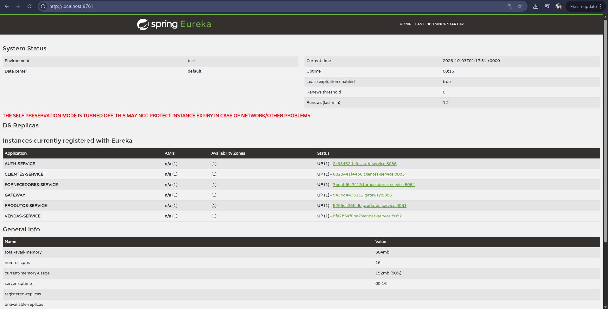
Figura 1 — Registro do produtos-service no Eureka.
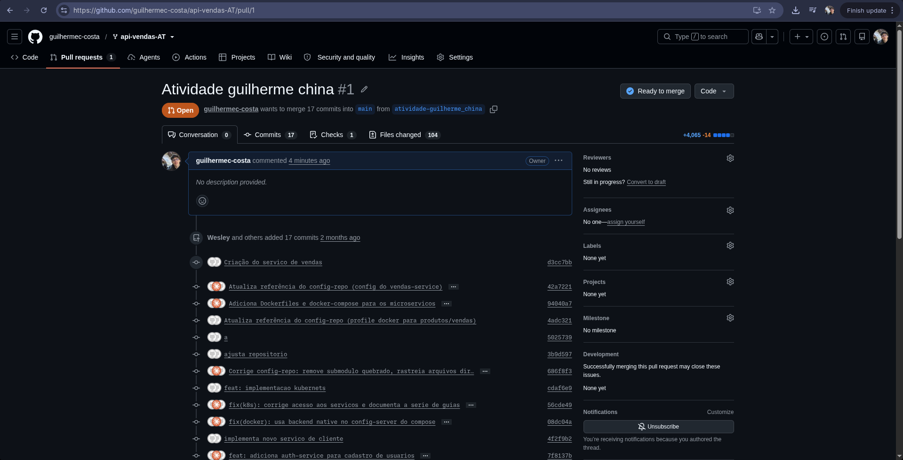
Figura 2 — Pull Request da atividade.
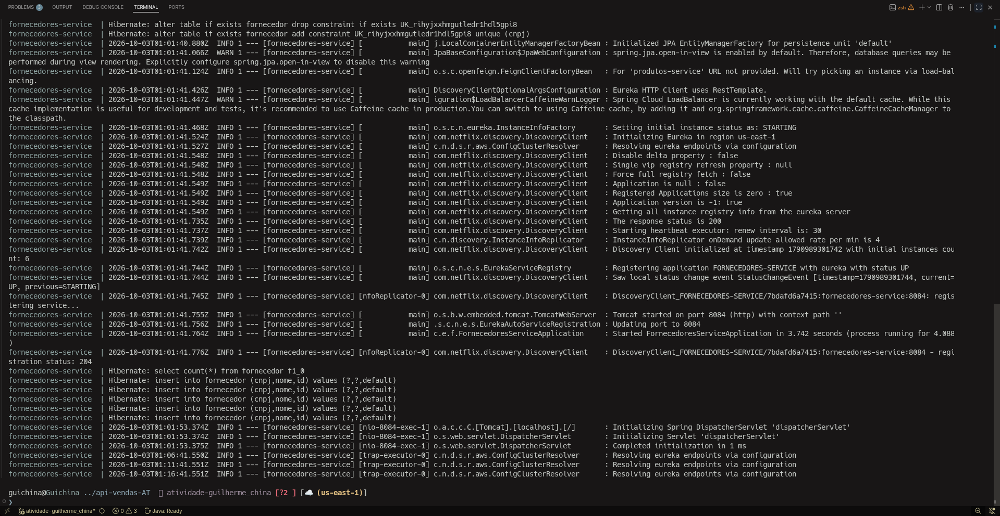
Figura 3 — Inicialização do novo microsserviço.
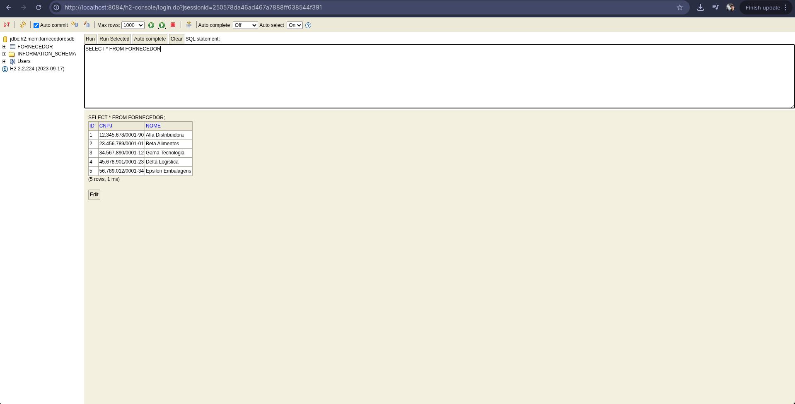
Figura 4 — Dados carregados automaticamente no H2.
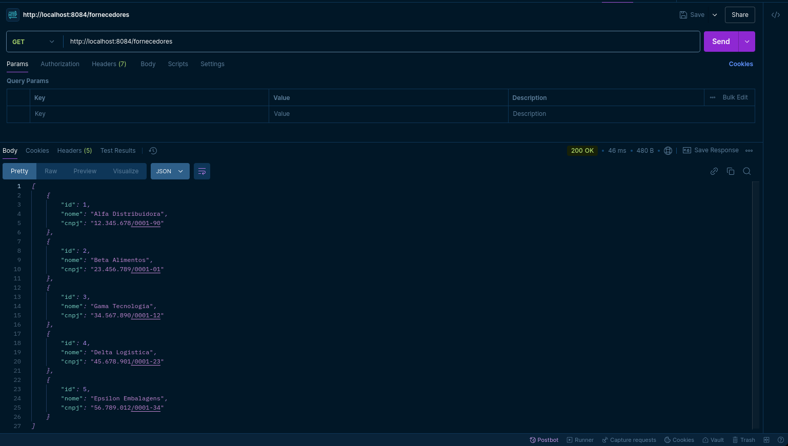
Figura 5A — Listagem de fornecedores com status 200 OK.
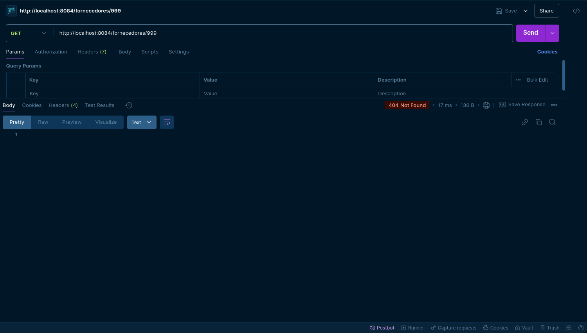
Figura 5B — Consulta de ID inexistente com status 404 Not Found.
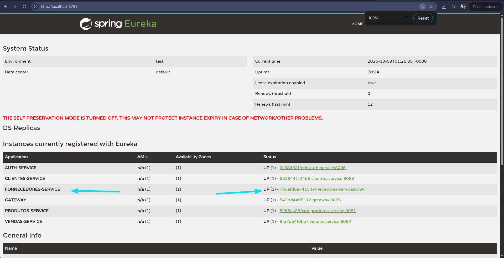
Figura 6 — Registro do fornecedores-service no Eureka.
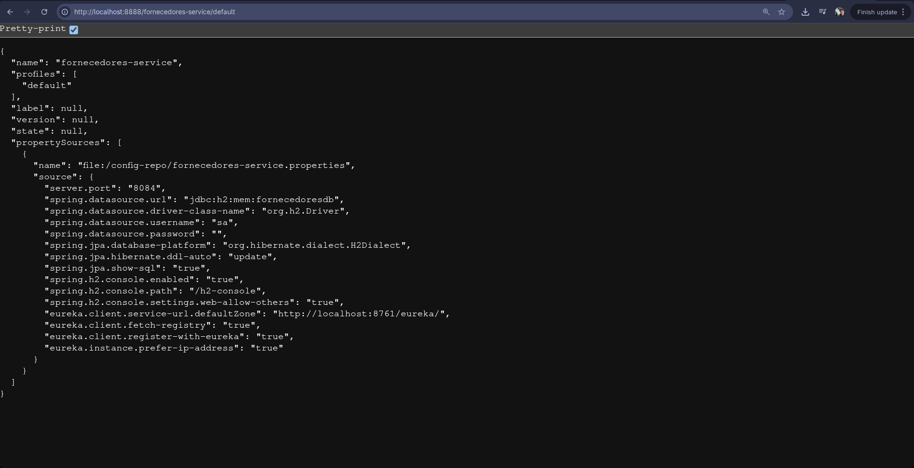
Figura 7A — Propriedades do serviço fornecidas pelo Config Server.
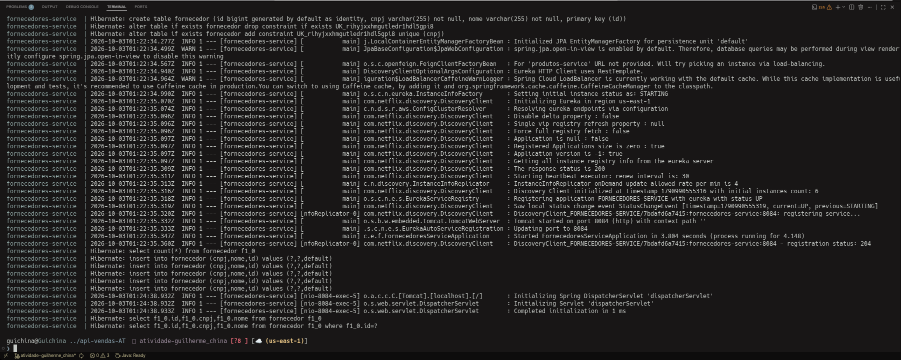
Figura 7B — Serviço iniciado na porta 8084 configurada externamente.
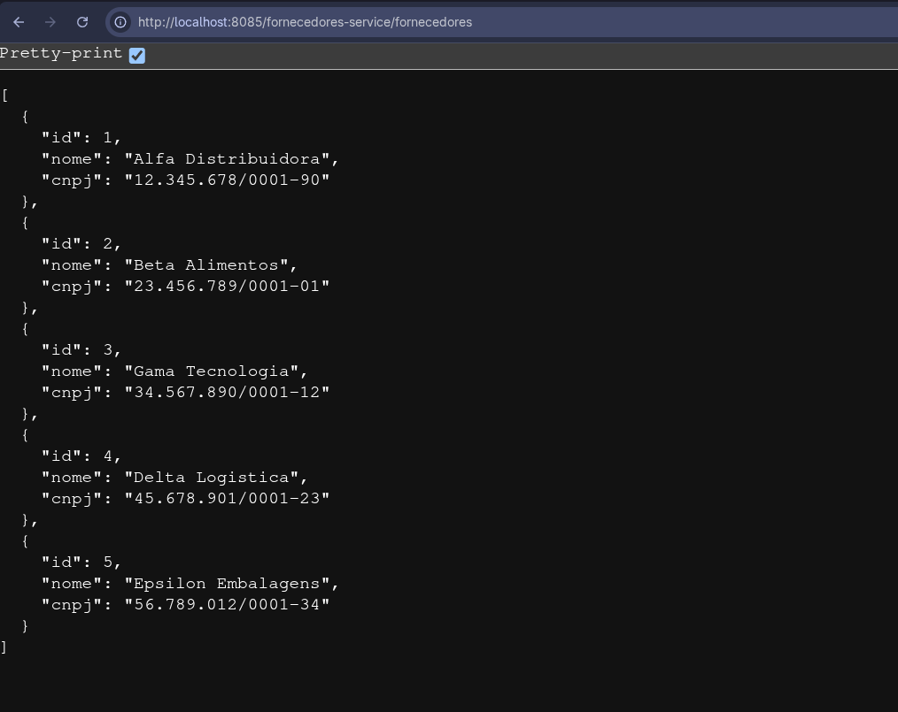
Figura 8 — Roteamento dinâmico pelo Spring Cloud Gateway.
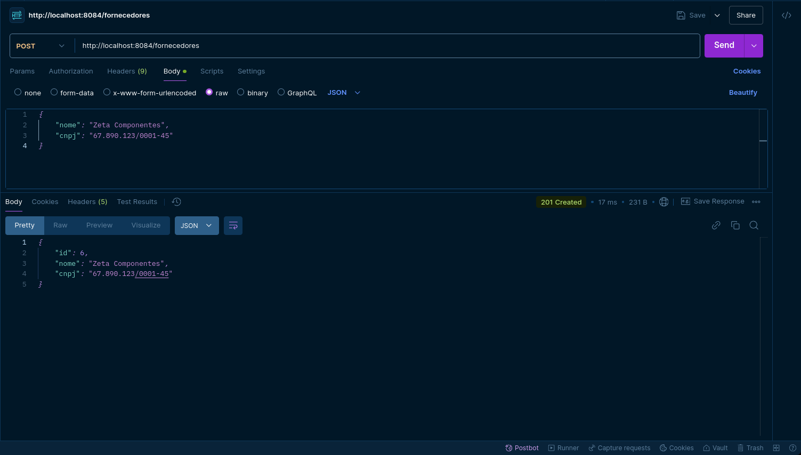
Figura 9 — Novo fornecedor persistido.
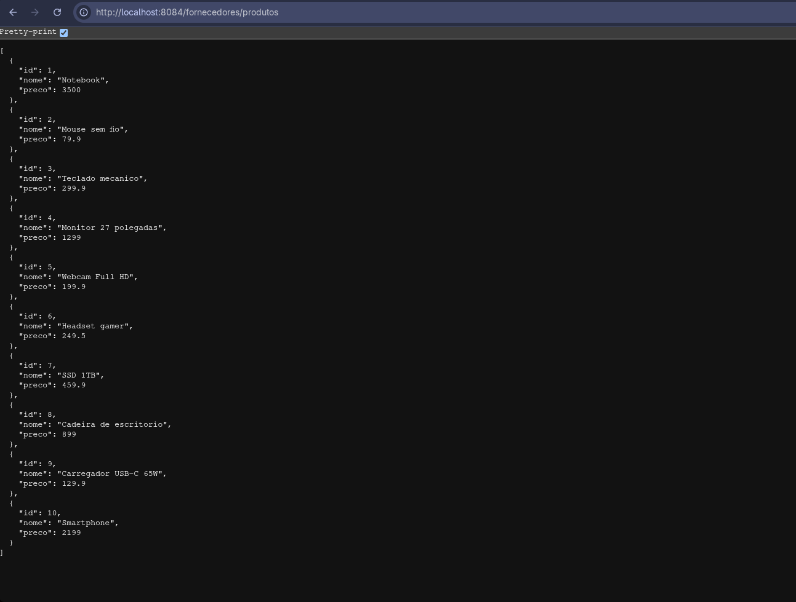
Figura 10 — Comunicação entre microsserviços via OpenFeign e Eureka.
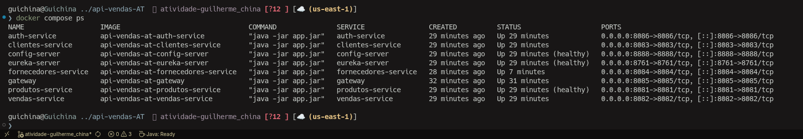
Figura 11A — Infraestrutura iniciada pelo Docker Compose.
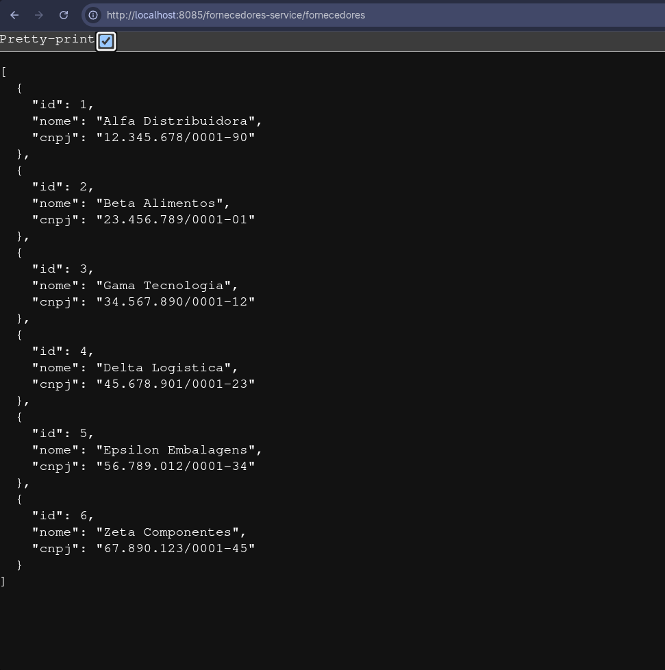
Figura 11B — Resposta integrada pelo Gateway no ambiente Docker.
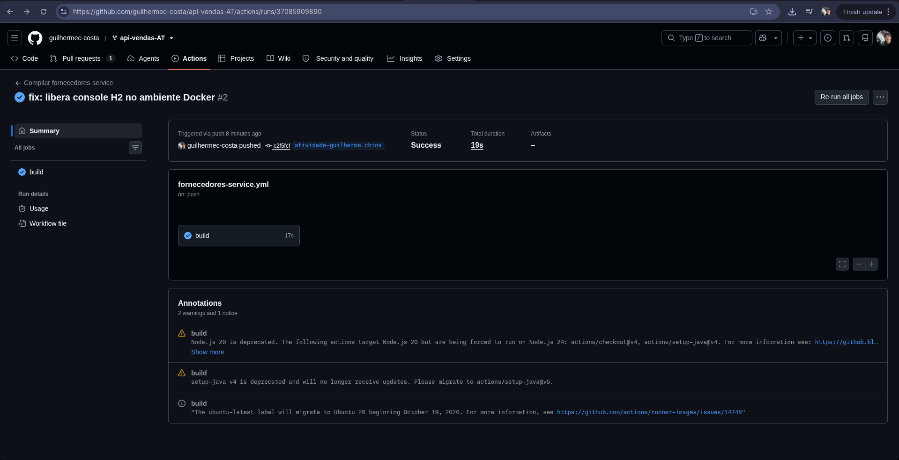
Figura 12 — Compilação Maven automatizada com Java 17.